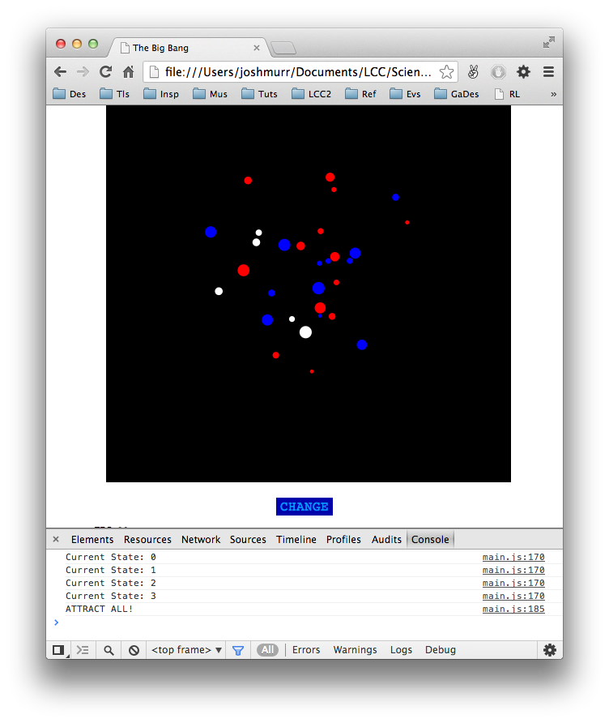
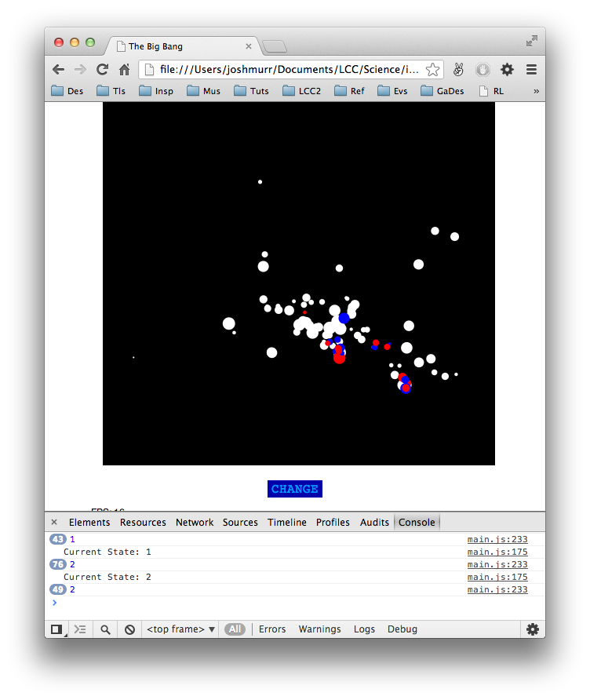
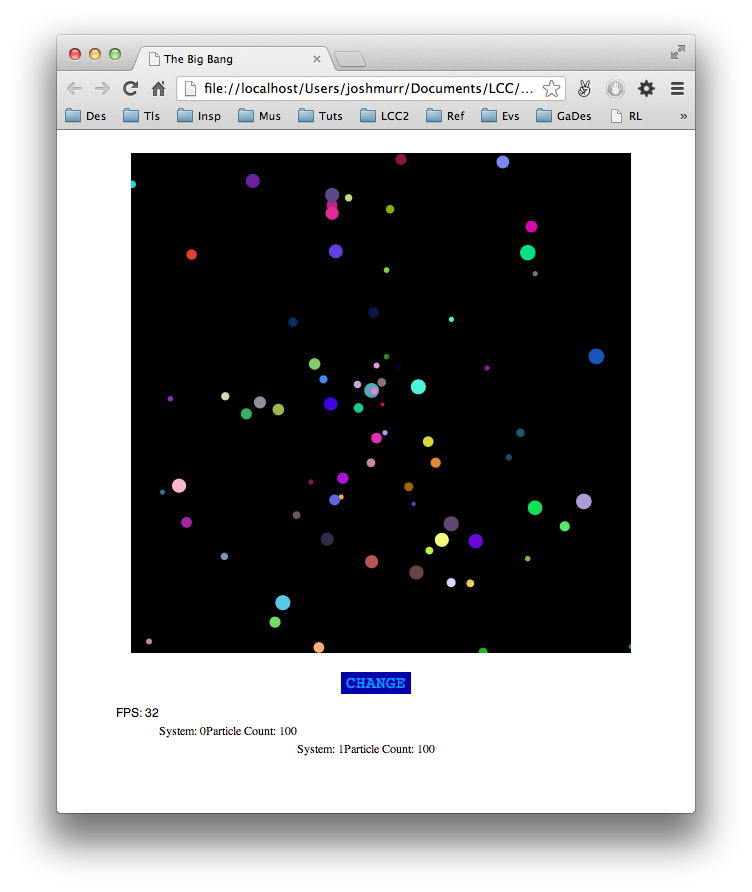
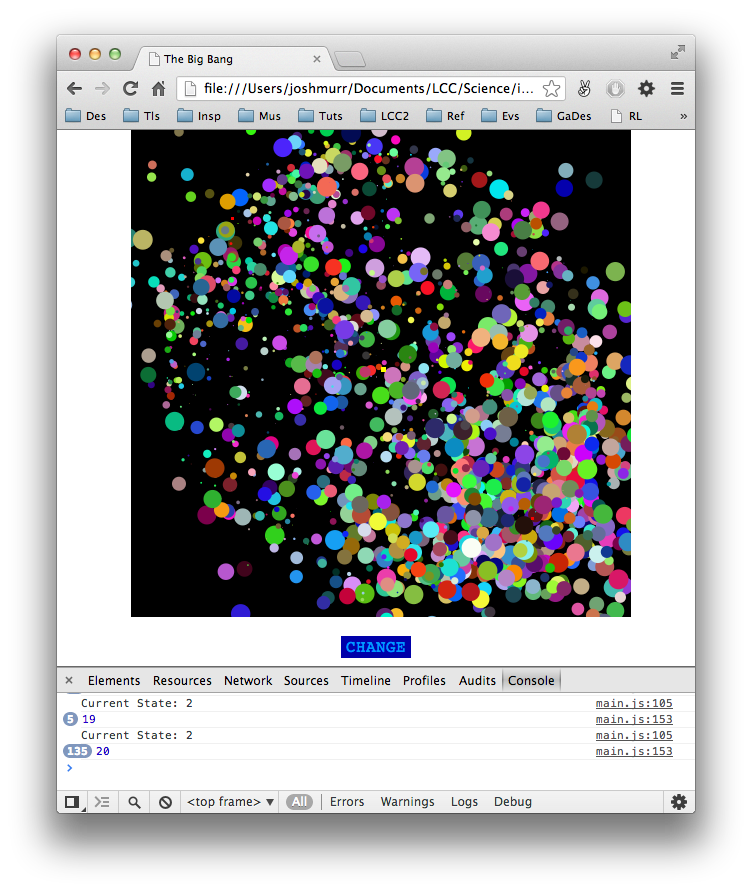
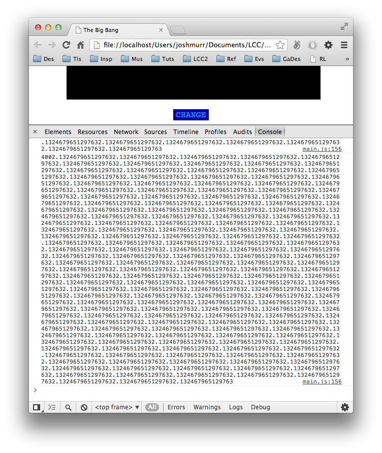
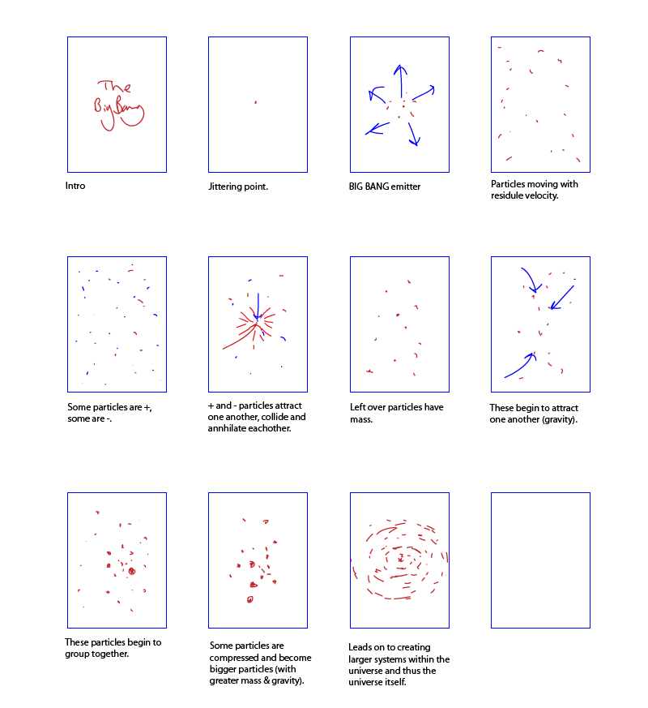
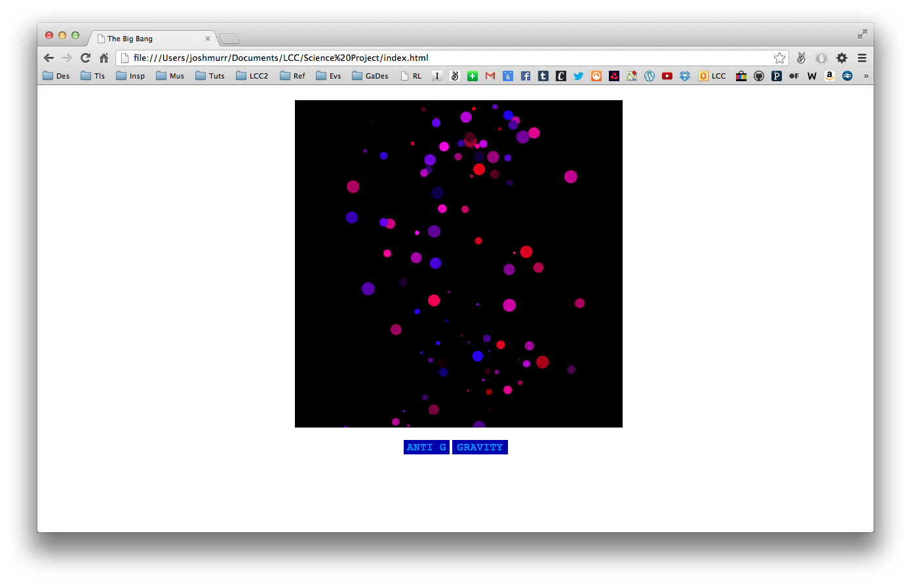
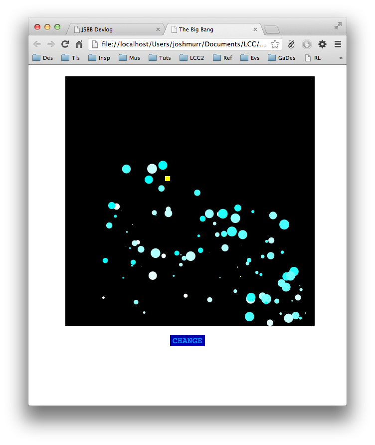

Big Bang Devlog
About
Code
I am trying to build a small web-application to explain the Big Bang through simple interactive and animated particle systems.
It is largely an experiment in Javascript and HTML5 for me, transferring some concepts originally learnt in Processing.
10. Not Far Off —
A comparatively very productive evening. After a week or so of most new implements going wrong, everything this evening worked first time. There is just one more feature to add, essentially the bones of the entire thing works now, as I initially intended it too&emdash;quite satisfying. I also said to myself (and I am now going to declare this here) that I would like to have this finished by the end of August. This was always meant to be a short project and I still intend it to be so. But I am on track for that any way.
Josh
9. More Progress —
Turns out the early decisions you make in the framework of your code severely affect the later development. I thought JSON would be a great way to store all the data needed for each state change, however accessing the data in a JSON file can be costly. I didn't really make use of JSON parsing which I'm sure I should have, but any way, I've swapped out the JSON for a simple switch-case setup. I've also eliminated the systems array and settled on just having one particle system, as I will hopefully only be dealing with that one particle system throughout.
One last side note, adding too many 'console.log()' statements, particularly in something which involves many calculations per frame can be the cause of slow frame rates and delays. That was one thing I learnt the hard way.
Josh
8. Progress —
Some progress was made today. The last physics based feature was implemented at works fine. The particles can now attract one another with their own gravitational pull. It does however pose some new problems, it involves the browser performing many calculation each frame and does slow the frame-rate down to around 20fps (from the desired 30fps) and it clearly noticeable. However, progress is progress.

Josh
7. Checking In —
This is largely me procrastinating. It's been a few days since I've updated this and little has changed really. I am getting better at identifying and fixing bugs in code which is good. But it's reached a stage where development is slow. However, the click-through state system is starting to work well. Each state does hold relevant information as I wanted it to and the click-through updates the current particles on screen. I am starting to realise the code is quite badly written and for it to be a truly efficient and speedy web-app the code will likely need a full overhaul. I'll see the project through and perhaps that can be Part II.
Josh
6. To Do —
After the hours wasted fixing such a small problem last night, I feel like now I need to bear such things in mind. One such thing is optimisation. This is an application (or whatever it is) which is to be displayed and used in a web browser which has to run in real time—so dealing with potentially thousands of particles each behaving independently will mean a lot of calculations the browser needs to perform per frame (currently at 30 frames per second). The above image shows 20 separate particle systems each dealing with 100 particles = 2000 particles. This particular example slowed the browser down considerably. Things to bear in mind:
- Frame Rate
- Class/Function definitions (there are quite a few of those)
- Stacked Functions
That'll keep me busy.
Josh
5. Fixed —
I didn't sleep on it, I fucking fixed it. The problem was issues with addition and concatenation. The values stored in the JSON are stored as strings, which naturally get concatenated, so they need to be converted to integers before they can be treated as integers. Of course it was a simple fix which didn't even require a single extra line of code. Now to back-track and repair all the extra damage I've done...
Josh
4. Bug —
This is a quick note to say what was a week or so of gradual progression, I have now reached my first major obstacle in the form of a bug. A bug which is making my console look like this:
I can't for the life of me figure out what is causing it. I have been putting console.log()'s in all over the place, re-arranging functions, re-writing the vector object and other shit but I can't seem to fix it. At some point it is turning a simple round number into NaN (Not a Numer). I'll sleep on it.
Josh
3. Structure —
Particles are no long constrained to the canvas itself and can fly on and off the visible area—this will allow me to make the visible area full-screen. If the particle is off-screen it's "lifeSpan" begins to decrease (yet to spawn a new particle on it's death however). Now I must consider the order of states the particles will go through:

The particles will undergo change in:
- Force
- Attraction to one-another - on/off
- Colour
- Size
All these attributes will be stored in the JSON object/file and called upon for each state change. The text to be overlaid will also be in the JSON object but I will return to this later.
Josh
2. Where I Am Now —
The idea for this project was to return to a video I made which was an attempt to explain the Big Bang to be displayed on the moving-image posters found alongside the escalators on the London Underground:
The particles systems in this case were made in Processing, exported frame-by-frame and then recomposed in After Effects with text. I have since learnt a lot more in the way of web-development and so for this project I decided to try and recreate the same series of particle effects but in real-time with added interactive elements using Javascript and HTML5.
Progress has been reasonable and developments have been made daily. Currently the particle systems work efficiently and I can manipulate the forces applied (gravity, points of attraction, etc.). To gain a level of interaction I would like the forces to change but the particles to remain, rather than creating a new set of particles for each stage in the explanation—to create smoother transitions and to make it more fun to click through. In the picture below you can see that one of two forces can be added by clicking the buttons.

Now, I am beginning to added state-by-state transitions which click through one-by-one. The 'Change' button progresses to the next state. All states will be held in a JSON file, each state holding a list of forces to be applied, location and strength of attractors/repellors and so on. This means the particles currently on the canvas can be kept.

Josh
1. Development Log —
I have decided to document the development of this project on this development log from now on. Working on an exclusively digital project means having a sketchbook to return to every-so-often hinders the speed at which I can work. To fully document the process I want to refer to research material and use imagery, and to print, cut and stick such things is time consuming. Although it has taken me an hour to get this how I want it to look and behave, I feel the time saved will get me that hour back and more. This is also something which can be turned into a physical object at the end of the project.
Josh